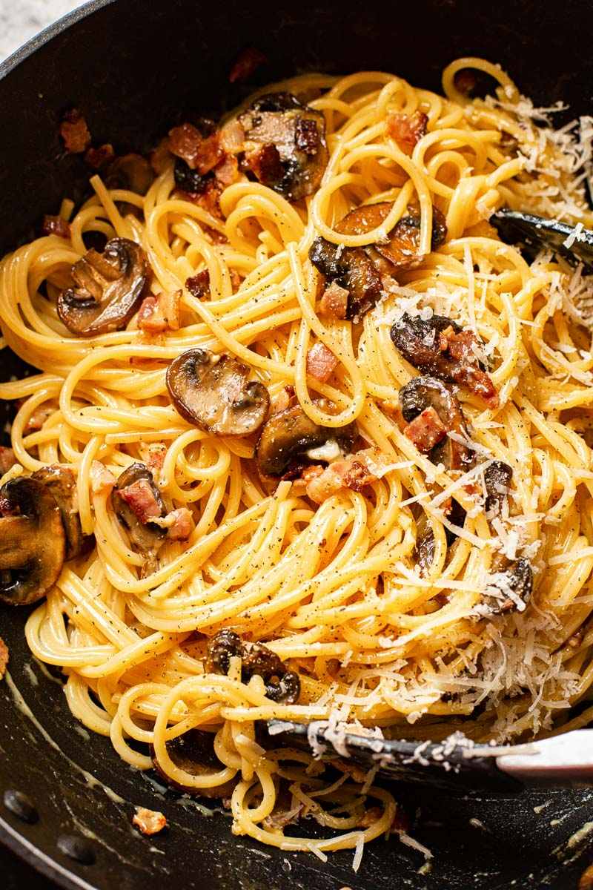

Carbonara

Description
Carbonara is a pasta dish traditionally made with guanciale, eggs, and cheese, but this will be a vegetarian version.
Ingredients
- Pasta (of your choice; I prefer linguine, personally)
- Cremini mushrooms
- Salt
- Butter
- Garlic
- Eggs
- Pecorino or Parmesan
- Pepper
Steps
- Begin by filling a large pot with water and salt. Make the water as salty as the Mediteranean Sea
- Toss the mushrooms with salt.
- While the water boils, in a large pan, add the butter and the diced mushrooms.
- When the mushrooms are well cooked, add the diced garlic.
- Add the linguine (whole! not broken) to the pot and cook.
- Now to begin the sauce: Separate the yolk out from one egg, and then add one whole egg.
- Add the cheese to the eggs, mixing thoroughly. Add a crack of pepper.
- Setting aside a mug of pasta water, drain the pasta.
- Now, mix together the mushrooms, pasta, and sauce, using the pasta water to maintain a good consistency.
- Serve.
Home